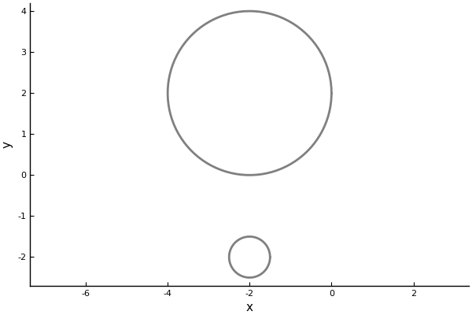
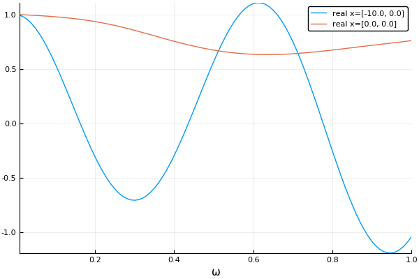
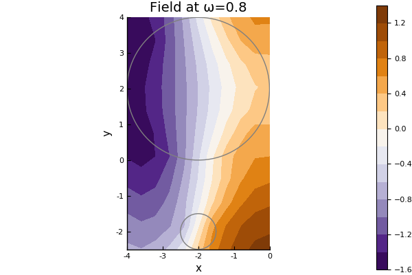
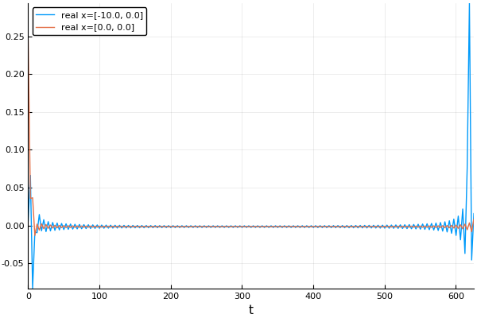
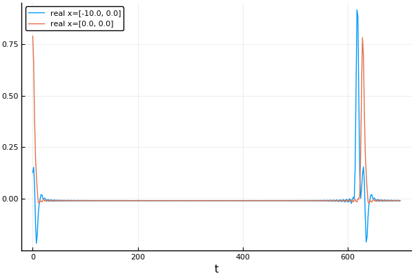

Introduction
Physical properties wave
First define the host medium, for example for an acoustic medium in 2D
julia> using MultipleScattering;
julia> spatial_dim = 2; # could also be 3, but then all 2D vectors below would need to be 3D
julia> host_medium = Acoustic(spatial_dim; ρ = 1.0, c = 1.0) # density ρ = 1.0 and soundspeed c = 1.0
Acoustic(1.0, 1.0 + 0.0im, 2)At this step we have restricted the physics to acoustics, that is, solutions to the Helmholtz equation: $\nabla^2 u(x,y,\omega) + k^2 u(x,y,\omega) = 0$, where $k = \dfrac{\omega}{c}$, $\omega$ is the angular frequency and $c$ the sound speed of the medium.
RegularSource wave
The host medium will determine the types of waves that can propagate. For example an incident plane wave $\mathrm e^{ \mathrm i k x}$ there is a convenient constructor
julia> source = plane_source(host_medium; direction = [1.0, 0.0]);
Often $\mathrm e^{ \mathrm i k x - \mathrm i \omega t}$ is considered to be a harmonic plane-wave travelling along the $x-$axis. We omit the part $ - \mathrm i \omega t$ as is common in frequency space.
We generally call the incident wave a source. See RegularSources for details, and see Acoustic for some functions for the Acoustic medium.
Particles
Next, we define some particles to scatter an acoustic wave. We choose two filled circles, the first centred at [-2, 2] with radius 2 and the second at [-2, -2] with radius 0.5,
julia> particle_medium = Acoustic(spatial_dim; ρ = 10.0, c = 2.0); # 2D acoustic particle with density ρ = 10.0 and soundspeed c = 2.0
julia> p1 = Particle(particle_medium, Sphere([-2.0, 2.0], 2.0));
julia> p2 = Particle(particle_medium, Sphere([-2.0, -2.0], 0.5));
julia> particles = [p1, p2];
See Shapes and Particles for details on different shapes and particles.
If you have the package Plots installed you can plot the particles. Note that although they appear hollow, we consider them to be filled with the same homogeneous material.
julia> using Plots;
julia> plot(particles)Most things in this package can be plotted just by typing plot(thing), as long as you have the package Plots installed. See Plotting for details on plotting.

Running a simulation
Once we have the medium, the particles, and the source, we can build a FrequencySimulation object
julia> simulation = FrequencySimulation(particles, source);
To get numerical results, we run our simulation for specific positions and angular frequencies,
julia> x = [[-10.0, 0.0], [0.0, 0.0]];
julia> max_ω = 1.0;
julia> ωs = 0.01:0.01:max_ω;
julia> result = run(simulation, x, ωs);
The accuracy of the result depends on the keyword basis_order of run, which has the default basis_order = 5. See Simulations and results for what run calculates, how to choose basis_order, and how to use result.
We can plot the time-harmonic response across the frequencies ωs wavenumbers and at the location (-10,0) by typing:
julia> plot(result)
For a better overview you can calculate the response for lots of points x in the domain and then plot the whole field for one frequency ω by typing:
julia> ω = 0.8;
julia> plot(simulation, ω);
julia> plot!(particles)
For details on plot fields and videos see Plotting.
Results in time
If we have calculated a frequency response $\hat u(\omega)$ over a range of frequencies $\omega$, then we can use a Fourier transform to calculate the response in time $u(t)$. That is, we can calculate $u(t)$ by approximating the Fourier transform:
\[u(t) = \frac{1}{2\pi} \int_{-\infty}^\infty \hat u(\omega)\mathrm e^{-\mathrm i \omega t} d\omega.\]
For details see the section on Time response. For example, taking a Discrete Fourier transform of the previous response leads to an incident plane wave pulse in time:
julia> time_result = frequency_to_time(result);
julia> plot(time_result)
In the image above the first peak on the left is due to the incident wave (the source), and the second peak is the wave scattered by the particles. Note how both peaks are quite jagged. This is due to Gibbs phenomena. To resolve this we can use a Gaussian impulse function shown below. See Time response for more details.
julia> t_vec = LinRange(0.,700.,400);
julia> gauss_time_result = frequency_to_time(result; t_vec = t_vec, impulse = GaussianImpulse(max_ω));
julia> plot(gauss_time_result)